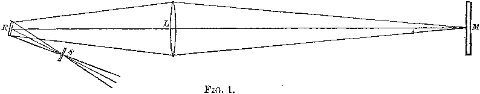
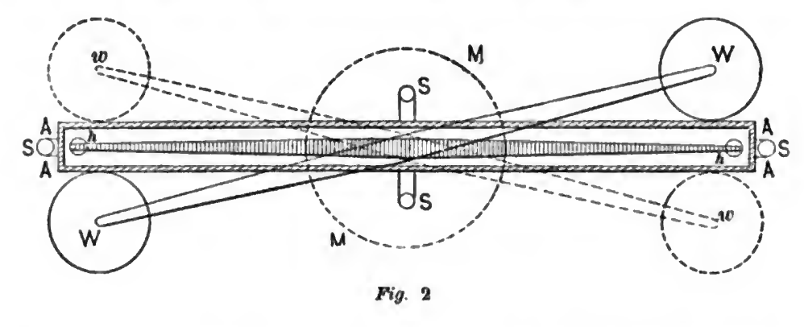

Histograms and Boxplots#
What can be shown, cannot be said.
Ludwig Wittgenstein
In this lab, you will get even more familiar with the statistical plotting features of Python using several famous datasets from the history of science. We will create histograms and boxplots to visualize the distributions of experimental data, and calculate sample statistics to summarize the data.
Instructions#
Download both csv datasets in the Datasets section and place them in the
Linux Filesfolder on your file system where you save your.pyscripts.Create a Python
.pyscript namedNAME_project_two.pyin yourLinux Filesfolder on your file system. You can do this by opening an IDLE session, creating a new file and then saving it. ReplaceNAMEwith your name.Create a Python docstring at the very top of the script file. Keep all written answers in this area of the script.
Read the Background section.
Read the Required Imports section. Add the required imports to you
.pyscript.Read the Graphical Representations section.
Read the Sample Statistics section.
Load in the data from the
.csvfiles using the technique outlined in the Loading Data section.Perform all exercises and answer all questions in the Project section. Label your script with comments or include your written answers in the Docstrings as indicated in the Project section.
When you are done, zip your script and the csv files into a zip file named
NAME_project_two.zipUpload the zip file to the Google Classrom Project Two asignment.
Formulae#
Percent Error#
Coefficient of Variation#
IQR Rule for Outliers#
If \(x_i\) satisfies either of the following conditions, then it is considered an outlier,
Background#
The Michelson Velocity of Light Experiment#
The Michelson Velocity of Light Experiment conducted in 1879 was the first time Albert A. Michelson successfully measured the speed of light. He would go on to do so several more times, eventually teaming up with Edward Morley. Together, using the principles Michelson first developed in 1879, Michelson and Morley would demonstrate in 1887 the speed of light was the same value regardless of the state of motion of the emitting body. This would go on to have profound effects for physics in the early twentieth century; It would lead Albert Einstein to propose the theory of relativity, one of the most significant intellectual developments in the history of humanity.
Michelson’s 1879 experimental results remained one of most accurate estimations of the speed of light until modern times. Using a series of mirrors depicted below, Michelson was able to divert light rays emitting from a common source along separate paths and then measure the fractional time difference it took for the rays to reach the same location.
{kind=link}
In this lab, we will analyze the dataset produced by Michelson in order to study typical distributions shapes encountered in science.
The Cavendish Density of the Earth Experiment#
Henry Cavendish performed the first modern, scientific experiment to measure the density of the Earth in 1797, which allowed humans to calculate the mass of the Earth for the first time.
Using the mutual gravitational attraction of two heavy metal balls attached to a torsion balanace to twist a fiber of string, Cavendish measured the force of the tension produced.
{kind=link}
With Newton’s Laws of Motion , he was able to derive an expression that related this force to the mass of the Earth.
Cavendish’s dataset is an excellent historical example of using statistical inference to produce new knowledge about the world around us.
Required Imports#
You will need to import the following libraries to complete this project,
import csv
import matplotlib.pyplot as plot
import statistics as stats
Graphical Representations#
Histogram#
Recall a histogram is a way of visualizing the frequency distribution of a sample of data,
The following code snippet shows how to create a histogram for a simple distribution of quantitative data,
import matplotlib.pyplot as plot
data = [ 1, 9, 10, 11, 20, 29, 30, 31, 39 ]
# Create figure and axes to graph on
(fig, axes) = plot.subplots()
axes.hist(data)
plot.title("Histogram of Random Sample")
axes.set_xlabel("Random Numbers")
axes.set_ylabel("Sample")
plot.show()
(Source code, png, hires.png, pdf)
{kind=link}
{kind=link}
Notice how easy and painless the whole process is! All we have to do is pass in a list of data to the hist() function and matplotlib will create a gloriously beautiful picture.
That is all well and good, but often we need a little more control over the features of our histogram. Luckily, matplotlib gives you the ability to tweak and fiddle to your heart’s content.
As another (more complex) example, the following plot is a histogram generated with matplotlib using 6 classes. Click on the source button in the top left corner to download the script. Read through the comments to see how it was constructed.
(Source code, png, hires.png, pdf)
{kind=link}
{kind=link}
The sample in this graph was randomly generated using a combination of the range() function and the random() function.
The line you want to pay attention in the script you just downloaded is,
axs.hist(data, bins=6, align='left', color='lightblue', ec='red')
The hist() function is matplotlib’s histogram graphing function.
Notice the first argument of this function is passed in alone, without a name (i.e. without an expression x = y). The first argument of the hist() function is always the sample of data you wish to plot; The data argument is simply a list of data.
The rest of the arguments are named (i.e. with an expression x = y). The named arguments can be passed into the hist() function in any order. For example, this line will generate the same histogram,
axs.hist(data, align='left', bins=6, ec='red', color='lightblue')
The only requirement is data must be passed in first. The other arguments may be passed in as you please.
And there are many arguments you can pass into the hist() function. You can check out the hist() documentation on the matplotlib website for a full list of arguments. To repeat: the only required argument is the data argument.
The bin argument is the number of classes. If don’t specify this, matplotlib will use its best judgement.
Important
bins is a term you will frequently see when using computer programs that generate histograms. bins are classes.
The other arguments, align, color and ec, affect the styling of the graph.
align tells matplotlib where to align the histogram bar. Valid values are left, mid and right. left aligns the histogram bars to the lower class limit. mid centers the histogram bars over the midpoint of each class. right will align the histogram bars with the upper class limit.
color is the color that fills the histogram bars. We discussed this argument in the Project One Bar Chart section. You can also find a list of all the named colors on the color page of the matplotlib documentation. Some of them are printed below for quick reference,
maroon
salmon
chocolate
darkorange
springgreen
navy
hotpink
As you can see, there are lots of options to make your graph nice and pretty.
Cumulative Frequency Histograms#
Recall the cumulative frequency of a distribution is defined as the sum of frequencies up to a certain observation,
We sometimes call \(F(x_i)\) the cumulative distribution function (CDF). It tells how much of a distribution is less than or equal to a certain observation. In symbols,
When we first introduced the CDF, we graphed it using a modified histogram where we stacked up the frequencies.
Note
This is different from how our calculators represent this graph. Our calculators use a line graph to plot the CDF.
Python also uses a modified histogram to graph the CDF. In fact, CDFs are generated using the same hist() function as regular histograms; the only difference between regular histograms and cumulative histograms in Python is the arguments you pass into the hist() function.
The following code snippet generates a CDF for a sample of data,
import matplotlib.pyplot as plt
(fig, axes) = plt.subplots()
data = [ 1, 9, 10, 11, 20, 29, 30, 31, 39 ]
plt.suptitle('Cumulative Histogram of Random Sample')
plt.title(f"n = {len(data)}")
axes.set_xlabel("Grades")
axes.set_ylabel("Cumulative Frequency")
axes.hist(data, bins=6, cumulative=True, density=True)
plt.show()
(Source code, png, hires.png, pdf)
{kind=link}
{kind=link}
To create a CDF, all we have to do is pass in two extra arguments to hist(), the cumulative argument and density argument. For CDFs, both of these arguments are set to True. cumulative tells matplotlib to accumulate the frequencies and stack them as it graphs the frequency distribution. density tells matplotlib* to scale the vertical axis to 1.
Boxplots#
Recall a boxplot is a way of visualizing the spread, or variation of a distribution. In order to create one, a boxplot requires the Five Number Summary of the distribution. The five sample statistics that are required are as follows,
#2-#4 represent the box of the boxplot. #1 and #5 represent the whiskers of the boxplot.
For example, suppose we had a sample of ordered data,
If we were doing this by hand, we would find all of the sample statistics in the Five Number Summary and draw the boxplot in the xy-plane (as we have many times). However, we are using matplotlib to create statistical graphs and matplotlib will do a lot of heavy-lifting for us.
Note
We will also talk about how to make Python calculate all these sample statistics for us in the Sample Statistics section down below.
A boxplot for the example we were just discussing can be created in Python with the following snippet of code,
import matplotlib.pyplot as plot
data = [ 1, 9, 10, 11, 20, 29, 30, 31, 39 ]
# Create figure and axes to graph on
(fig, axes) = plot.subplots()
axes.boxplot(data, vert=False, whis=(0,100))
plot.title("Box Plot of Random Sample")
axes.set_xlabel("Random Numbers")
axes.set_ylabel("Sample")
plot.show()
(Source code, png, hires.png, pdf)
{kind=link}
{kind=link}
The boxplot() is, as you might have guessed, matplotlib’s way of generating boxplots. The first argument is the dataset we will wish to graph.
The second argument is a named argument vert. This controls the direction of the boxplot, i.e vertical versus horizontal. We have passed in a value of False, meaning we want a horizontal boxplot. We always want our boxplots to align with our histograms; that is to say, we want the x-axis of both the histogram and the boxplot to represent the same values.
The third argument, whis, is an ordered pair that controls where the whiskers of the boxplot are drawn. The first number in the ordered paired is the lower percentile you wish to graph; the second number in the ordered pair is the upper percentile you wish to graph. We have passed in `(0,100)` to indicate the whiskers will be drawn at the 0 th and the 100 th percentile; in other words, at the minimum and maximum values of the distribution.
Simultaneous Plots#
matplotlib is capable of graphing multiple plots at once. To do this, we create multiple sets of axes. We control the number of axes matplotlib creates by passing in arguments to the subplot().
The following code snippet will create a histogram and boxplot on the plot and then display it to the user,
.. code:: python
import matplotlib.pyplot as plot
data = [ 1, 9, 10, 11, 20, 29, 30, 31, 39 ]
# Create figure and axes to graph on
(fig, axes) = plot.subplots(1, 2)
axes[0].hist(data)
axes[1].boxplot(data, vert=False, whis=(0,100))
plot.title("Box Plot of Random Sample")
axes.set_xlabel("Random Numbers")
axes.set_ylabel("Sample")
plot.show()
(Source code, png, hires.png, pdf)
{kind=link}
{kind=link}
There are several things to notice about this code.
First: We are passing in a `1` and a `2` to the subplots() function. When you pass arguments into subplots(), it creates multiple figures and multiple axes. In this class, we don’t care about figures, but because we want to create multiple axes, we still have to pass in a `1`; matplotlib always interprets the first argument to the subplots() function as the number of figures to create. The second argument to the subplots() function is the important bit; we are passing in a `2`, which tells matplotlib to create two sets of axes. It will return these axes as a list, which brings us the second important point.
Second: We plot the histogram on one set of axes and we plot the boxplot on another set of axes. Because we passed `2` into the matplotlib function, the axes variable is now a list of axes. We have to access each individual axes through its index and bracket notation. The line,
axes[0].hist(data)
calls the hist() function on the first set of axes. The line,
axes[1].boxplot(data, vert=False, whis=(0,100))
calls the boxplot() function on the second set of axes.
Sample Statistics#
Python has a Statistics library that provides functions for calculating common sample statistics. Hope over to the Statistics page and read through the list of functions that can be imported into your script.
For this lab, we will need the Mean function, the Quantiles function` and the Standard Deviation function. The rest can be ignored until later sections in the class.
Project#
Velocity of Light#
Load the Velocity of Light data into a Python Script using the technique outlined in the Loading Data section.
Construct a histogram plot for this dataset using eight classes. Answer the following questions in the body of your Docstrings.
What type of shape does this distribtion have?
Based on your answer to part a, how do you expect the sample mean to compare to the sample median?
Construct a cumulative frequency histogram for this dataset on the same graph as your histogram. Using the CDF, answer the following questions in the body of your Docstrings.
What is the approximate value of the third quartile?
What is the approximate value of the first quartile?
What is the approximate value of the median?
What is the approximate value of the interquartile range?
On what intervals is the CDF steepest? On what intervals is it approximately flat? Explain what these intervals means in terms of the speed of light.
Construct a boxplot for this dataset on the same graph as your histogram and CDF. Using the boxplot, answer the following questions in the body of your Docstrings.
What is the approximate value of the third quartile?
What is the approximate value of the first quartile?
What is the approximate value of the median?
What is the approximate value of the interquartile range?
What does the boxplot tell you about the shape of the distribution? Express the answer in terms of the variable being measured. In other words, what does the boxplot tell you about this distribution of measurements? Is it centered? Is it skewed?
Using the Statistics library, calculate the following sample statistics. Label all of your calculations with comments.
The sample mean.
The sample median.
The sample standard deviation.
The first quartile.
The third quartile.
The interquartile range.
The coefficient of variation.
Answer the following questions in your Docstrings. Label any calculations you perform to arrive at your answers with comments.
How many standard deviations away from the mean is the third quartile?
How many standard deviations away from the mean is the first quartile?
Explain the results of part #b and #c. What features of the distribution cause these quantities to be approximately equal or unequal?
Answer the following question in your Docstrings: Based on the IQR rule, are there any possible outliers in this dataset?
Write a few sentences in your Docstrings describing Michelson’s distribution of data. Use sample statistics to describe the center of the distribution, the shape of the distribution and the variability of the distribution.
The actual value of the speed of light, according to the best estimates we have today, is \(299,792,458 \frac{m}{s}\). Use this information to answer the following questions in the body of your Docstrings: What is the percent error of Michelson’s estimate with respect to the actual value?
Density of the Earth#
Load the Density of the Earth data into a Python Script using the tecnique outlined in the Loading Data section.
Construct a histogram plot for this dataset using eight classes. Answer the following questions in the body of your Docstrings.
What type of shape does this distribtion have?
Based on your answer to part a, how do you expect the sample mean to compare to the sample median?
Construct a cumulative frequency histogram for this dataset on the same graph as your histogram. Using the CDF, answer the following questions in the body of your Docstrings.
What is the approximate value of the third quartile?
What is the approximate value of the first quartile?
What is the approximate value of the median?
What is the approximate value of the interquartile range?
On what intervals is the CDF steepest? On what intervals is it approximately flat? Explain what these intervals means in terms of the density of earth.
Construct a boxplot for this dataset on the same graph as your histogram and CDF. Using the boxplot, answer the following questions in the body of your Docstrings.
What is the approximate value of the third quartile?
What is the approximate value of the first quartile?
What is the approximate value of the median?
What is the approximate value of the interquartile range?
What does the boxplot tell you about the shape of the distribution? Express the answer in terms of the variable being measured. In other words, what does the boxplot tell you about this distribution of measurements? Is it centered? Is it skewed?
Using the Statistics library, calculate the following sample statistics. Label all of your calculations with comments.
The sample mean.
The sample median.
The sample standard deviation.
The first quartile.
The third quartile.
The interquartile range.
The coefficient of variation.
Answer the following questions in your Docstrings. Label any calculations you perform to arrive at your answers with comments.
How many standard deviations away from the mean is the third quartile?
How many standard deviations away from the mean is the first quartile?
Explain the results of part #b and #c. What features of the distribution cause these quantities to be approximately equal or unequal?
Answer the following question in your Docstrings: Based on the IQR rule, are there any possible outliers in this dataset?
Write a few sentences in your Docstrings describing Cavendish’s distribution of data. Use sample statistics to describe the center of the distribution, the shape of the distribution and the variability of the distribution.
The actual value of the density of the Earth, according to the best estimates we have today, is \(5.515 \frac{g}{cm^2}\). Use this information to answer the following questions in the body of your Docstrings: What is the percent error of Cavendish’s estimate with respect to the actual value?
Comparative Analysis#
Answer the following questions in your Docstrings.
Which experimental distribution of data has more variability? Justify your answer with sample statistics calculated in the previous two sections.
Which distribution is more skewed and in which direction does the skew lie? Justify your answer with sample statistics calculated in the previous two sections.
Which experiment yielded a more accurate measure with respect to modern estimates? Justify your answer with sample statistics calculated in the previous two sections.
We have encountered normal distributions in a wide array of seemingly unrelated subjects: geyser durations, wine acidity, alpha particle emissions and now: the speed of light and the density of earth. We have not yet explained why the phenomenon of normality occurs so often (so often, you might call it normal), but that will soon change. As a precursor of things to come, answer the following question to the best of your current ability: Based on what you have learned so far in this course, why do you think normal distributions occur so often in nature?
Datasets#
Loading Data#
The following code snippet will load in a CSV spreadsheet named example.csv, parse it into a list and then print it to screen, assuming that CSV file is saved in the same folder as your script. Modify this code snippet to fit the datasets in this lab and then use it to load in the provided datasets in Datasets section.
import csv
# read in data
with open('example.csv') as csv_file:
csv_reader = csv.reader(csv_file)
raw_data = [ row for row in csv_reader ]
# separate headers from data
headers = raw_data[0]
columns = raw_data[1:]
# grab first column from csv file and ensure it's a number (not a string)
column_1 = [ float(row[0]) for row in columns ]
print(column_1)
Important
This is slightly different from how we did it in the first project. Python reads in the .csv file as plain text, even the numbers. In other words, Python interprets an observation of, say, 2 as a string of text that says "2"; this is fine and dandy when dealing with categorical data because we represent categories with strings. When we are dealing with quantitative data, we have to tell Python to convert the plain text to a float data type (Recall floats are decimal valued data types). The float() function in the code snippet above converts the plain text to a numeric value and stores it in a variable.
Velocity of Light Data#
You can download the full dataset here.
The following table is the a preview of the data you will be using for this project.
Velocity ( km/s ) |
299850 |
299740 |
299900 |
300070 |
299930 |
299850 |
299950 |
299980 |
The meaning of the column is clear from the column header: each observation measures the speed of light in meters per second, \(\frac{km}{s}\).
Density of the Earth Data#
You can download the full dataset here.
The following table is the a preview of the data you will be using for this project.
Density |
5.5 |
5.61 |
4.88 |
5.07 |
5.26 |
5.55 |
5.36 |
5.29 |
5.58 |
5.65 |
5.57 |
The first column corresponds to the experiment number (first, second, third, etc.). The second column is the ratio of the density of Earth to the density of water. Recall the density of water by definition is \(1 \frac{g}{cm^3}\).